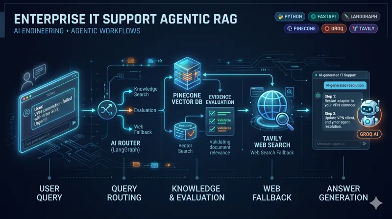
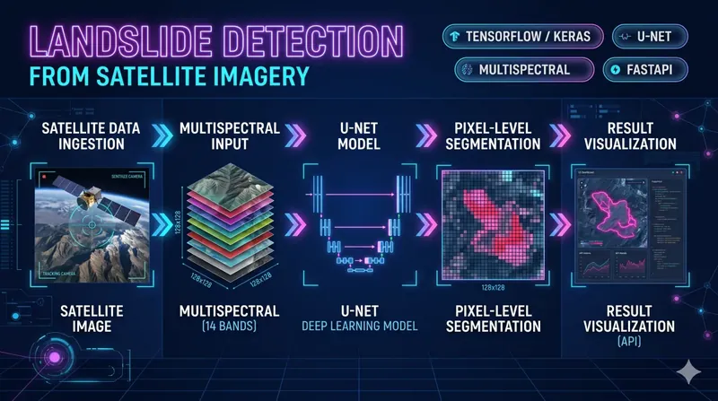
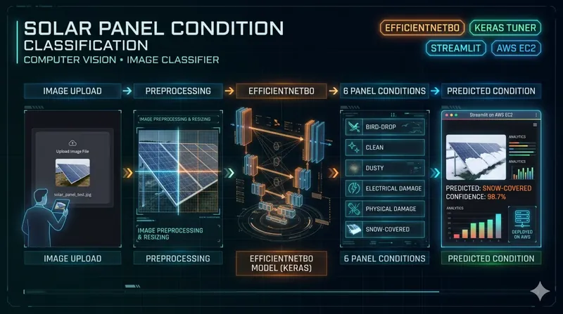
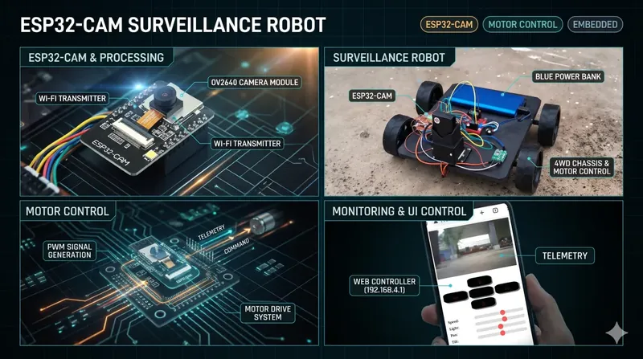
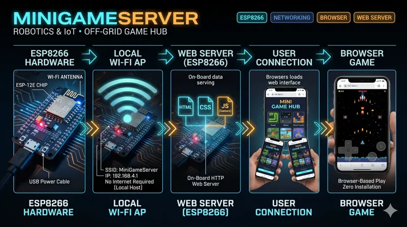
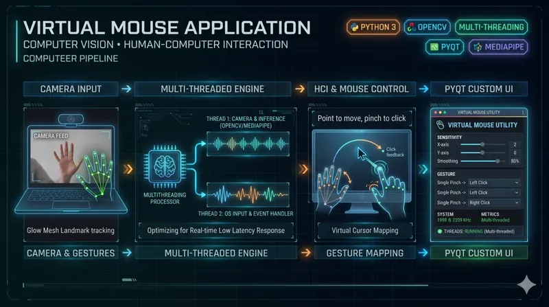

AI Engineering
An AI knowledge system that retrieves and works with information from HR documents through document ingestion, chunking, embeddings and vector search.
Projects
Eight projects across agentic AI, computer vision and robotics. Select one to see how it works and open its repository.
AI Engineering
An AI knowledge system that retrieves and works with information from HR documents through document ingestion, chunking, embeddings and vector search.

AI Engineering
A workflow-based agent for IT support questions: it retrieves knowledge, evaluates the evidence, and falls back to web search when needed.

Computer Vision
Pixel-level landslide segmentation on the Landslide4Sense dataset (128 × 128 patches, 14 bands including Sentinel-2, slope and elevation data) using a U-Net.

Computer Vision
Image classifier for six panel conditions: bird-drop, clean, dusty, electrical damage, physical damage and snow-covered. Streamlit interface, deployed on an AWS EC2 Linux instance.

Robotics & IoT
A camera-enabled robot built around the ESP32-CAM, combining embedded systems, camera monitoring and motor control.
Robotics & IoT
A hands-on ground vehicle project involving embedded hardware and ESP32-CAM.

Robotics & IoT
An ESP8266 board that creates a local Wi-Fi hotspot and serves browser-based games to anyone who connects.

Computer Vision
An exploration of vision-based human-computer interaction through a virtual mouse.